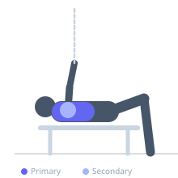

Exercise guide / Resistance Band Chest Fly
Resistance Band Chest Fly
The resistance band chest fly is a portable, joint-friendly isolation exercise that trains the pectoral muscles through a wide arc using an elastic band. As the band stretches, resistance increases toward peak contraction, providing an accommodating load curve that complements the natural strength curve of the chest.
Primary muscles
pectoralis major sternal
pectoralis major clavicular
Secondary muscles
deltoid anterior
Stabilizers
pectoralis minor
Equipment
Resistance Band (Loop / Mini Band)
Optional
Resistance Band (Tube with Handles)


Starting position
- Anchor a resistance band behind you at chest height or loop it around a stable post. Stand facing away and hold one end of the band in each hand, arms extended out to the sides at shoulder height.
Setup
- Secure the band anchor at chest height. Step far enough from the anchor that the band has light tension even at the start position.
Steps
- Step 1: Stand in a staggered or athletic stance, holding both ends of the band.
- Step 2: Begin with arms extended out to the sides, hands at shoulder level.
- Step 3: Sweep both arms forward and together in front of your chest, squeezing the pectorals at the meeting point.
- Step 4: Slowly open the arms back to the starting position with control, resisting the band's pull.
- Step 5: Maintain a fixed, slightly bent elbow throughout the movement.
Coaching cues
- Control the band on the way back — it's the eccentric that builds
- Feel the chest squeeze as hands meet
- Keep shoulders away from ears
Breathing
- Exhale as you bring the arms together. Inhale as you open them back to the start.
Range of motion
- Open arms until a mild chest stretch is felt. Bring hands together without crossing the midline past the sternum for maximum contraction.
Tempo
- 2-1-3-0
Common mistakes
- Anchoring the band too low or too high, altering the exercise angle
- Allowing the arms to snap back due to band recoil
- Straightening the elbows completely under tension
Safety
- Check the band anchor is secure before each set
- Inspect bands for tears or wear before use
- Start with a lighter band to establish range of motion
Training
- hypertrophy: 12–20 reps
- endurance: 20–30 reps
- hypertrophy: 3–4 sets
- Rest: {'hypertrophy': 60, 'endurance': 30}